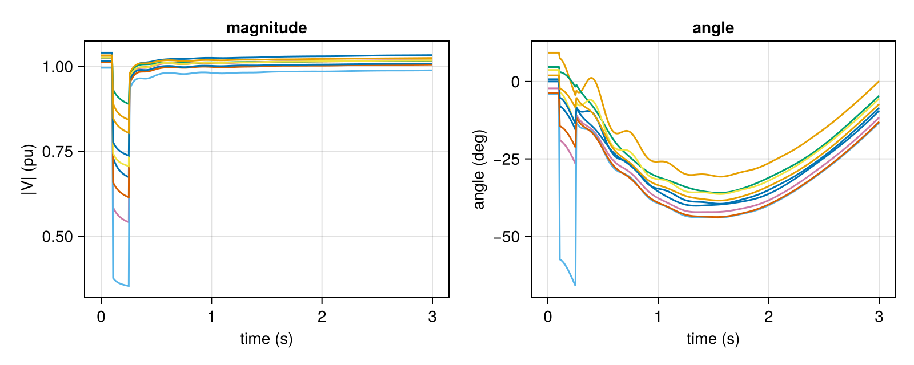
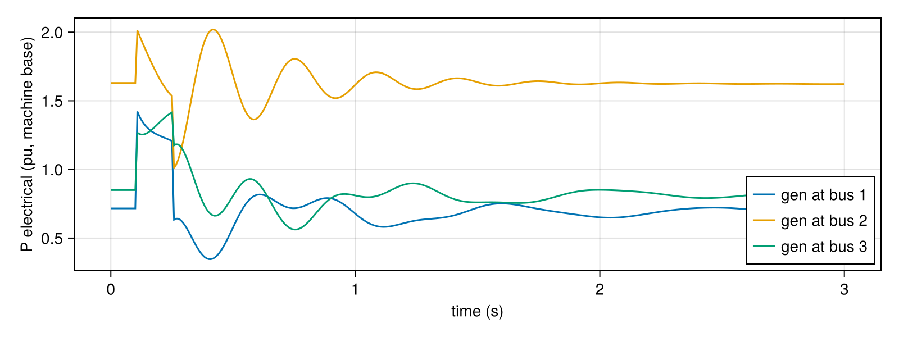

Reading the results
integrate! returns (t, traj). Column j of traj is the complete state of the DAE at time t[j]:
z = [ x differential states (machines, governors, exciters, ...)
y algebraic states (machine stator voltages/currents, ...)
v bus voltages (vr₁, vi₁, vr₂, vi₂, ...) rectangular, pu ]Each device owns a contiguous slice of x and y. Here is how to find any quantity.
using GradPower, CairoMakie
ex = joinpath(pkgdir(GradPower), "examples")
sys = from_psse(joinpath(ex, "ieee9_v33.raw"), joinpath(ex, "ieee9bus_gov.dyr"))
build_network!(sys); runpf!(sys)
dp = DynamicProblem(sys); initialize_dynamics!(dp, sys)
(diff = sys.dynamic.diff_dim, alg = sys.dynamic.alg_dim, voltages = 2length(sys.buses))(diff = 33, alg = 15, voltages = 18)Devices and their states
Every device lists its own states by name:
dd = sys.dynamic.diff_dim
for d in sys.dynamic.devices
names = vcat(get_diff_names(d.dtype), get_alg_names(d.dtype))
isempty(names) && continue
println(rpad(string(nameof(typeof(d.dtype))), 7), " bus ", d.dtype.bus,
" x[", d.diff_ptr, ":", d.diff_ptr + d.dtype.diff_size - 1, "] ",
get_diff_names(d.dtype), " y ", get_alg_names(d.dtype))
endGenrou bus 1 x[1:6] ["e_qp", "e_dp", "phi_1d", "phi_2q", "w", "delta"] y ["v_q", "v_d", "i_q", "i_d"]
Genrou bus 2 x[17:22] ["e_qp", "e_dp", "phi_1d", "phi_2q", "w", "delta"] y ["v_q", "v_d", "i_q", "i_d"]
Genrou bus 3 x[33:38] ["e_qp", "e_dp", "phi_1d", "phi_2q", "w", "delta"] y ["v_q", "v_d", "i_q", "i_d"]
IEESGO bus 1 x[11:15] ["PF0", "PLL", "TP1", "TP2", "TP3"] y ["p_m"]
IEESGO bus 2 x[27:31] ["PF0", "PLL", "TP1", "TP2", "TP3"] y ["p_m"]
IEESGO bus 3 x[43:47] ["PF0", "PLL", "TP1", "TP2", "TP3"] y ["p_m"]So for a GENROU machine d, rotor speed and angle are
w = traj[d.diff_ptr + 4, :] # speed deviation (pu)
delta = traj[d.diff_ptr + 5, :] # rotor angle (rad)and its algebraic states (e.g. stator currents i_q, i_d) are at traj[dd + d.alg_ptr + k, :]. GradPower.gen_speeds(sys) returns the speed rows of all machines.
Bus voltages
Voltages are the last 2 * nbus rows, interleaved as real/imaginary parts:
add_event!(sys, ContingencyEvent(sys.busmap[5], 0.05, 0.1, 0.25))
t, traj = integrate!(dp, sys, 3.0)
net = sys.dynamic.diff_dim + sys.dynamic.alg_dim
V(b) = complex.(traj[net + 2b - 1, :], traj[net + 2b, :])
fig = Figure(size = (800, 320))
ax1 = Axis(fig[1, 1], xlabel = "time (s)", ylabel = "|V| (pu)", title = "magnitude")
ax2 = Axis(fig[1, 2], xlabel = "time (s)", ylabel = "angle (deg)", title = "angle")
for b in eachindex(sys.buses)
lines!(ax1, t, abs.(V(b)))
lines!(ax2, t, rad2deg.(angle.(V(b))))
end
fig
Power from a machine
Quantities that are not states can be computed from them. For example, the electrical power of each GENROU machine P = vr·ir + vi·ii (here from the stator voltages and currents in the machine's dq frame):
fig = Figure(size = (800, 300))
ax = Axis(fig[1, 1], xlabel = "time (s)", ylabel = "P electrical (pu, machine base)")
for d in sys.dynamic.devices
d.dtype isa GradPower.Genrou || continue
a = dd + d.alg_ptr # [v_q, v_d, i_q, i_d]
P = traj[a, :] .* traj[a + 2, :] .+ traj[a + 1, :] .* traj[a + 3, :]
lines!(ax, t, P, label = "gen at bus $(d.dtype.bus)")
end
axislegend(ax, position = :rb)
fig
Parameters
The parameters of every device live in dp.pvec (the kernels read them from there). They are listed by get_param_names:
g = sys.dynamic.devices[findfirst(d -> d.dtype isa GradPower.Genrou, sys.dynamic.devices)]
collect(zip(get_param_names(g.dtype), dp.pvec[g.par_ptr .+ (0:g.dtype.par_size-1)]))14-element Vector{Tuple{String, Float64}}:
("x_d", 0.741)
("x_q", 0.7093076923076923)
("x_dp", 0.1466153846153846)
("x_qp", 0.21034615384615385)
("x_ddp", 0.1111153846153846)
("xl", 0.09396153846153844)
("H", 11.206)
("D", 0.026000000000000002)
("T_d0p", 7.729)
("T_q0p", 0.859)
("T_d0dp", 0.047)
("T_q0dp", 0.068)
("S1", 0.115)
("S2", 0.627)Changing dp.pvec before integrate! changes the model. For example, dp.pvec[g.par_ptr + 6] *= 2 doubles that machine's inertia H. Scenario studies use this through integrate_batched!.